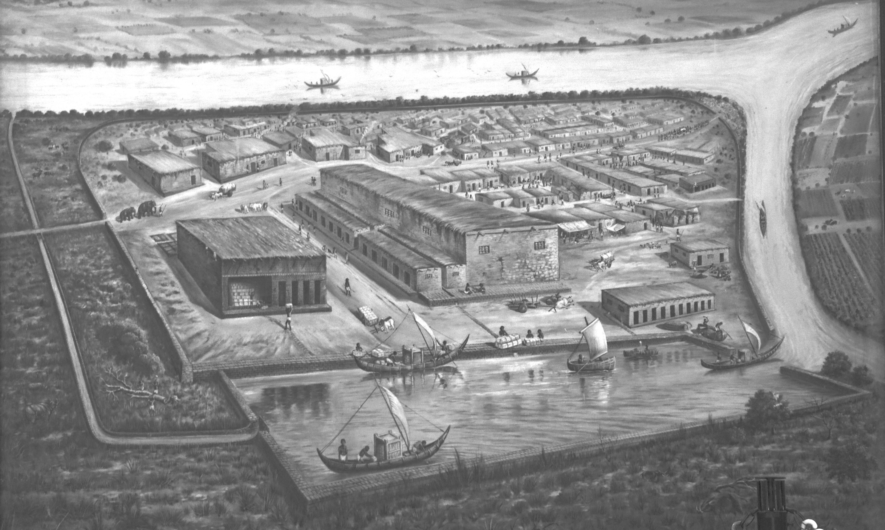

OBJECTIVES
The objective is to demonstrate and
spread awareness about the conservation and restoration
of cultural artifacts, monuments, etc. among the indian as well
as global citizens. We aim to provide researchers, professional
and hobbiest a place to learn and play with 3D models for their purposes.
In a nutshell, following are
the main objectives of this project.
-
To develop a complete framework for the efficient construction of accurate 3D models of existing Indian cultural
heritage sites and artifacts.
-
To develop a restoration framework where one could quickly fill the missing parts in the digital models of cultural
heritage sites and artifacts using mesh processing tools.
-
To print the 3D models of the artifacts to obtain replicas to be supplied to museums, libraries, Indian embassies
abroad, schools and various cultural institutions.
-
To create an online repository of 3D models of Indian monuments and artifacts for public and government uses, such as
documentation, archiving, show-casing, education, etc.
-
To prepare the restored 3D models of sites for use in robotics and gaming applications for realistically modeling the
digital environments for better interaction.
-
To create an augmented reality-based platform using the 3D models in order to provide the users with a virtual tour of
different monuments and an immersive experience of the environment.
-
To provide consultancy advice to relevant organizations about 3D scanning, reconstruction, and printing technology.
-
To organize courses and training workshops for archaeologists, museum curators, industry professionals, academics, and
interested students about the best practices developed.
-
To develop a framework for the fingerprinting and dating of artifact pieces.
-
To spread awareness about the conservation of cultural artifacts and monuments among Indian citizens.
We aim to create a repository of 3D models
of Indian monuments and artifacts for public and government
uses, such as documentation, archiving, show-casing, education, etc.
We plan to cover a wide range of artifacts & structures from
different cultural heritage sites,
such as Adalaj, Sarkhej, Roza,Lothal etc.
Lothal Archeology Site Museum, Gujarat

Lothal (meaning “the mound of the dead” in Gujarati) is situated near the village of Saragwala in the Dholka Taluka of Ahmedabad district of present Gujarat. It was the part of Indus Vally Civilization. Indus valley has been known to be the cradle for one of the earliest civilizations of the world.
It is managed by the Archaeological Survey of India (ASI), the official Indian government agency for the preservation of ancient monuments, and is open for public access.
Because of India-Pakistan partition in 1947, Most of the Harappan sites went in Pakistan hence ASI took the responsibilities to find Harappan sites if any, in the reasons east of Indus valley and ended up finding Lothal in 1954 (along with more than forty Harappan sites), by the team led by archaeologist S. R Rao.
Evidence suggests that the Lothal was once a port. During the excavation period, Local people were worshipping some sandstone mullers (later on it was found to be a dock), which according to them were representatives of the sea goddess, Vanuvatimata. Temples dedicated to Vanuvati Sikotarimata are situated at Kuda, near Gogha, and near Hajira about 20 miles from Surat.
As per outlook traveller, a Travel Magazine and Website, “Archaeologists have dated this site to as far back as 2450 BCE, with the Harappan period ending around 1900 BCE, transitioning into what is known as a Red Ware Culture in 1300 BCE.”
Lothal was one of the important industrial hubs of its time. The archaeological museum in Lothal was set up in 1976. One can explore terracotta ornaments, beads, seal & sealing, shell, ivory, animal and human figurines as well as beautiful pottery at the museum. The burial of 2 people together in a brick-lined grave can also be seen there.